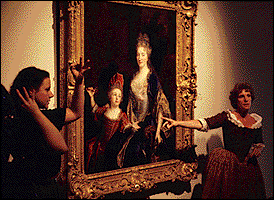

| Special Needs Tours  29k The museum is accessible to visitors with disabilities. Wheelchairs are available upon request. Group tours for fewer than ten visitors requiring wheelchairs are available. Visitors with hearing impairments may arrange tours according to individual needs - from interpreted small-group tours to one-on-one tours with a docent. A public tour interpreted for the hearing impaired is offered the first Sunday of each month at 2:00 p.m. Visitors with visual impairments may request an individualized touch-tour under the guidance of a docent. To schedule any of the following tours, call the Tours Scheduling Office
at least three weeks in advance. For more information call (612) 870-3141,
TDD (612) 870-3132 or (888) MIA-ARTS (642-2787) . |